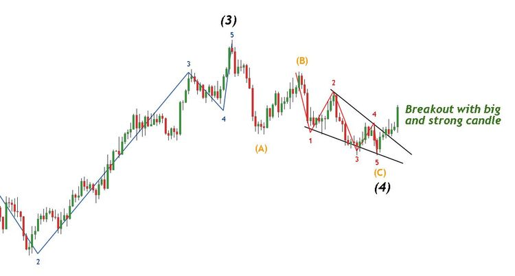

La stratégie du day trading consiste à ouvrir et clôturer toutes ses positions avant la fermeture des marchés. Cela permet d'éviter les risques liés à la détention de positions « overnight ». Les day traders réalisent de nombreuses opérations rapides tout au long de la journée.
Le trading de position consiste à conserver un actif pendant une période plus longue, souvent des semaines ou des mois. Contrairement au day trading, ce type de stratégie repose moins sur les fluctuations du marché à court terme.

Le swing trading repose sur l’identification des fluctuations dans les mouvements de cours d’un actif. Le but est de capitaliser sur les hausses et baisses du marché sur des périodes variant entre deux jours et une semaine.
Le trend trading consiste à suivre une tendance de marché, qu'elle soit à la hausse ou à la baisse. Les traders identifient la tendance actuelle et ouvrent des positions en fonction de cette direction. C'est une stratégie qui peut être utilisée à court, moyen ou long terme.
Le scalping est une forme de day trading qui implique d’ouvrir et fermer des positions très rapidement, souvent en quelques secondes ou minutes. Cette stratégie est utilisée pour profiter des petites variations de prix.